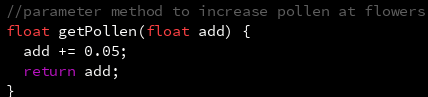
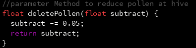

This project was created to demonstrate a simplified process of bees pollinating flowers. Me and my partner created this project by combining Madisons like for making pixel art, and my love of collection games. When brainstorming, we both were thinking of ways to make the project combine our interests. Since we both thought of flowers, this project was created
Use your mouse to move the bee and collect pollen from the flowers. Move the bee to a flower to collect its pollen. Move the bee to the hive to deposit the pollen.

The parameter was used add to the value of a variable by 0.05 to slowly incriment it. This was used two times in the program, once to add to the pollen variable, and the other to add to the honey variable. This method was useful to create because I had to execute it multiple times in the program.

The return method was used to subtract the pollen when it has to go to the hive. At the moment, it is not the most useful, as is is only ever used for one variable, so making it a parameter and return is not as useful; however, the return method can be used for further development of the project.
We were one of the very few students to not have used LLMs to help create our project. We decided that while LLMs can be helpful, creating this project on our ownallowed us to gain appreciation for our work. We could have defineltly used LLMs to help with the coding, but we are glad we were able to show our own creaitivity and coding skills without the help of LLMs.